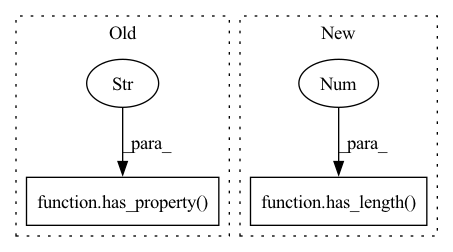

Pattern ID :34537
Before Change
// Test that warning is raised when cat_features is None
with caplog.at_level(logging.WARNING):
Dataset(iris)
assert_that(caplog.records, has_item(has_property( "message",
"It is recommended to initialize Dataset with categorical features by doing "
"\"Dataset(df, cat_features=categorical_list)\". No categorical features were "
"passed, therefore heuristically inferring categorical features in the data.\n"
"0 categorical features were inferred" )
))
// Test that warning is not raised when cat_features is not None
caplog.clear()After Change
// Test that warning is raised when cat_features is None
with warnings.catch_warnings(record=True) as w:
Dataset(iris)
assert_that(w, has_length(1 ) )
assert_that(str(w[0].message), equal_to("It is recommended to initialize Dataset with categorical features by "
"doing \"Dataset(df, cat_features=categorical_list)\". No categorical features were "
"passed, therefore heuristically inferring categorical features in the data.\n"In pattern: SUPERPATTERN
Frequency: 4
Non-data size: 2
Instances Fragment ID: 99323471
Project Name: deepchecks/deepchecks
Commit Name: 4bd7fe0a6ef2ae456d93834cba70a6ed2e97bf7d
Time: 2022-05-18
Author: matan@deepchecks.com
File Name: tests/base/dataset_test.py
M Class Name: AnonimousClass
N Class Name: AnonimousClass
M Method Name: test_cat_features_warning(1)
N Method Name: test_cat_features_warning(2)
M Parent Class:
N Parent Class:
M File Name: tests/base/dataset_test.py
N File Name: tests/base/dataset_test.py
M Start Line: 1042
M End Line: 1057
N Start Line: 1042
N End Line: 1053
Before Change
// Assert
assert_that(result, all_of(
instance_of(CheckResult),
has_property("display" , any_of(none(), empty()))
))
def test_percent_of_nulls_with_columns_of_categorical_dtype():After Change
result = PercentOfNulls().run(df, with_display=False)
// Assert
assert_that(result.display, has_length(equal_to(0)))
assert_that(result.value, has_length(2 ) )
assert_that(result.value.iloc[0, 0], equal_to(0.5))
assert_that(result.value.iloc[1, 0], equal_to(0.25))
Fragment ID: 99323470
Project Name: deepchecks/deepchecks
Commit Name: 0f96dcc7ceafdb87c80e0f325d570993874e1ff3
Time: 2022-08-30
Author: 67195469+Nadav-Barak@users.noreply.github.com
File Name: tests/tabular/checks/integrity/percent_of_nulls_test.py
M Class Name: AnonimousClass
N Class Name: AnonimousClass
M Method Name: test_percent_of_nulls_without_display(0)
N Method Name: test_percent_of_nulls_without_display(0)
M Parent Class:
N Parent Class:
M File Name: tests/tabular/checks/integrity/percent_of_nulls_test.py
N File Name: tests/tabular/checks/integrity/percent_of_nulls_test.py
M Start Line: 43
M End Line: 47
N Start Line: 38
N End Line: 43
Before Change
// Assert
assert_that(result, all_of(
instance_of(CheckResult),
has_property("value" , has_entries({"bar": equal_to(0.25)}))
))
def test_columns_parameter():After Change
// Act
result = PercentOfNulls(ignore_columns=["foo"]).run(df)
// Assert
assert_that(result.value, has_length(1 ) )
assert_that(result.value.iloc[0, 0], equal_to(0.25))
Fragment ID: 99323469
Project Name: deepchecks/deepchecks
Commit Name: 0f96dcc7ceafdb87c80e0f325d570993874e1ff3
Time: 2022-08-30
Author: 67195469+Nadav-Barak@users.noreply.github.com
File Name: tests/tabular/checks/integrity/percent_of_nulls_test.py
M Class Name: AnonimousClass
N Class Name: AnonimousClass
M Method Name: test_exclude_parameter(0)
N Method Name: test_exclude_parameter(0)
M Parent Class:
N Parent Class:
M File Name: tests/tabular/checks/integrity/percent_of_nulls_test.py
N File Name: tests/tabular/checks/integrity/percent_of_nulls_test.py
M Start Line: 86
M End Line: 91
N Start Line: 75
N End Line: 78
Before Change
// Assert
assert_that(result, all_of(
instance_of(CheckResult),
has_property("value" , has_entries({"foo": equal_to(0.5)}))
))
def test_condition():After Change
// Act
result = PercentOfNulls(columns=["foo"]).run(df)
// Assert
assert_that(result.value, has_length(1 ) )
assert_that(result.value.iloc[0, 0], equal_to(0.5))
Fragment ID: 99323468
Project Name: deepchecks/deepchecks
Commit Name: 0f96dcc7ceafdb87c80e0f325d570993874e1ff3
Time: 2022-08-30
Author: 67195469+Nadav-Barak@users.noreply.github.com
File Name: tests/tabular/checks/integrity/percent_of_nulls_test.py
M Class Name: AnonimousClass
N Class Name: AnonimousClass
M Method Name: test_columns_parameter(0)
N Method Name: test_columns_parameter(0)
M Parent Class:
N Parent Class:
M File Name: tests/tabular/checks/integrity/percent_of_nulls_test.py
N File Name: tests/tabular/checks/integrity/percent_of_nulls_test.py
M Start Line: 98
M End Line: 103
N Start Line: 85
N End Line: 88